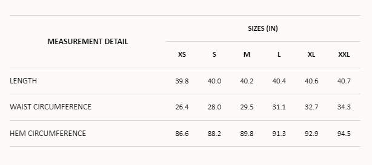

Designed for your everlasting wardrobe, the Menorca Top in Tobacco is your summer linen essential.
This long sleeve crop top is crafted from responsibly sourced linen and features a relaxed silhouette,
high boat neckline and flared shape through the sleeves for an exaggerated flair.
Style it with the matching Es Raco Skirt for a timeless two-piece set.
The Es Raco Skirt in Tobacco is a brown maxi skirt designed
to sit high on the waist and fall down to a floating full length hem. Crafted from European Flax® linen
boasting complete traceability and socially responsible standards, the Es Raco Skirt is a wardrobe staple
you can wear to all occasions. Style it with the removable belt featuring multi-coloured resin beads,
hand-crafted by our Indonesian artisans.
Details
Made from Linen - European Flax® & OEKO-TEX100® Certified
Women's belted maxi skirt
Removable belt with multi-coloured resin beads
High-rise waist
Fixed waistband
Thin belt loops
Vertical panel line shaping
Invisible zipper with hook and eye
Unlined
Designed to be fitted through the waist and relaxed through the skirt
Styling Note: This is a really easy, wearable two piece set, something you can wear for all occasions.
This skirt comes with a beaded belt we're also wear with jeans and a t-shirt.
Add to Cart Button
Size & Fits
Fits true to size. Designed for a relaxed fitting look.
Fitted waist, please check your measurements against the product measurements below.
Lenny is wearing a size Small and her measurements are Height: 5’11”, Bust: 31”, Waist: 24”, Hips: 35.5”.
Lenny is wearing a size Small and her measurements are Height: 5’11”, Bust: 31”, Waist: 24”, Hips: 35.5”.

Garment Care
100% Linen - European Flax® & OEKO-TEX100 ® Certified
Linen is designed to soften over time, with wear.
Colour variations and natural defects in the weave are a part of the garments unique beauty.
This garment is hand-made, hand-dyed and hand-printed in Bali, Indonesia. Due to this hand-made process each piece is unique and there can be slight irregularities in the print and colour of the garment. To ensure a long lasting garment life whilst caring for the environment please follow these instructions:
Hand-wash in cold water. These care processes are more gentle on the garments and help to protect the colour, shape and structure of the fabric whilst reducing the amount of energy used.
Avoid bleach and use environmentally friendly detergents. Avoid tumble dry and hang dry where possible. This saves electricity and avoids fibre degradation.
Cool iron when needed.
>
Join us on email and get 10% off your first purchase